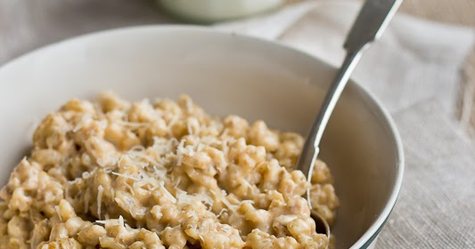

AVALEHT
JÕULUDEST
JÕULUTOIT
JÕULUFILMID
Traditsioonilised jõulutoidud Eestis
Jõulutoidud Eestis 20. sajandil ja varemgi
jõulukäkk ehk jõululeib
tanguvorstid
sealiha
verikäkk
hapukapsad
kartulid
naerid
soolaoad
või
tangupuder

Jõulutoidud tänapäeva Eestis
seapraad
hapukapsad
kartulid
kõrvitsasalat
pohlamoos või -salat
pasteet
verivorstid
sült
soolaheeringas
täidetud munad
kartulisalat
kringel
präänikud
piparkoogid
mandariinid
Traditsioonilised jõulujoogid
morss
mahlad
õlu
vahuvein
glögi